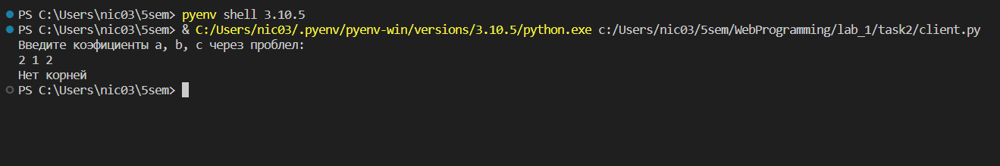
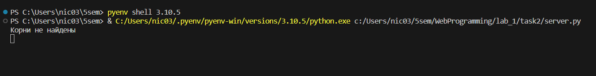
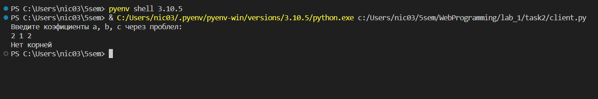
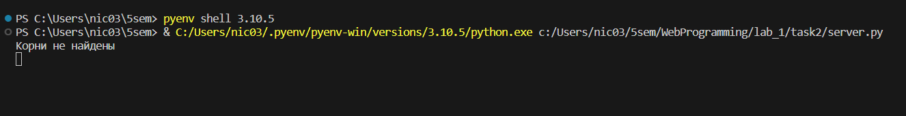

Задание 2
Текст задания
Реализовать клиентскую и серверную часть приложения. Клиент запрашивает у сервера выполнение математической операции, параметры, которые вводятся с клавиатуры. Сервер обрабатывает полученные данные и возвращает результат клиенту.
- Мой вариант: Решение квадратного уравнения
- Обязательно использовать библиотеку
socket- Реализовать с помощью протокола
TCP
Код
server.py
import socket
from numpy import polynomial
sock = socket.socket(socket.AF_INET, socket.SOCK_STREAM)
sock.bind(('127.0.0.1', 49001))
sock.listen(1)
conn, adr = sock.accept()
while True:
try:
data = conn.recv(1024).decode("utf-8")
data = data.split()
a, b, c = int(data[0]), int(data[1]), int(data[2])
if (b*b - 4*a*c) >= 0:
pol = polynomial.Polynomial([a, b, c])
pol = pol.roots()
roots = str(pol[0]) + ' ' + str(pol[1])
print('Корни найдены')
else:
roots = "Нет корней"
print('Корни не найдены')
conn.send(roots.encode())
except:
conn.close()
client.py
import socket
sock = socket.socket(socket.AF_INET, socket.SOCK_STREAM)
sock.connect(('127.0.0.1', 49001))
print('Введите коэфициенты a, b, c через проблел:')
try:
a, b, c = map(str, input().split())
coef = a + ' ' + b + ' ' + c
sock.send(coef.encode())
data = sock.recv(1024).decode("utf-8")
print(data)
except:
print('Какая-то ошибка')
sock.close()
Пример работы

 


